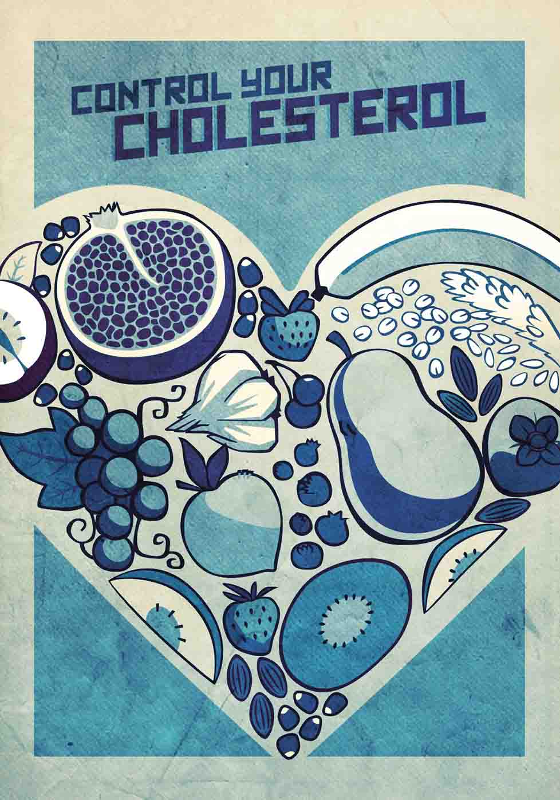

High cholesterol increases your risk for developing heart disease atherosclerosis, and stroke. Good health depends on keeping your HDL and LDL at the right levels.
Know your numbers:
If you are overweight, losing even 5 to 10 percent of your body weight can lower your cholesterol levels. Exercise for 30 minutes most days of the week. Regular exercise can increase HDL and reduce LDL. Eat heart-healthy foods. Avoid saturated and trans fats and choose foods high in omega-3s. Stock up on whole grains, veggies, and fruit.
You can inherit high cholesterol. Know your family history for high cholesterol, early heart disease, and high blood pressure.
